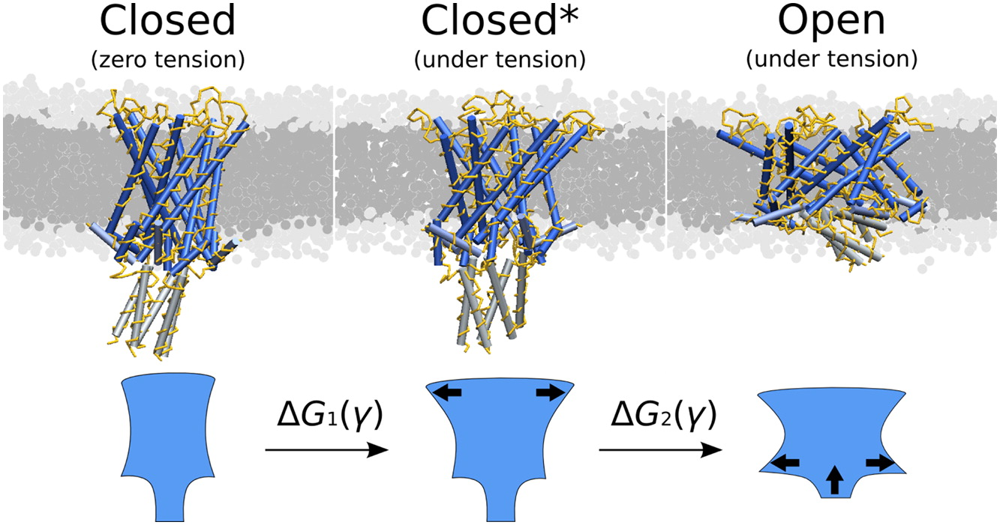
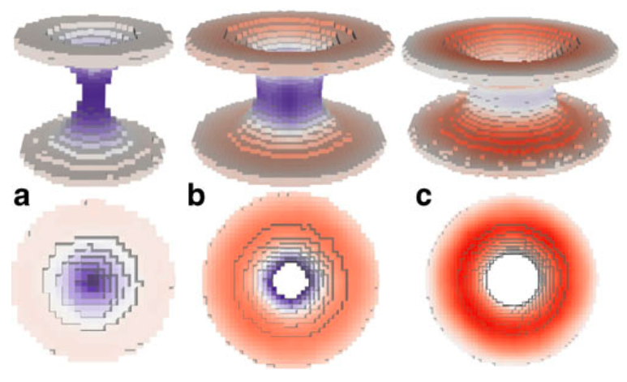
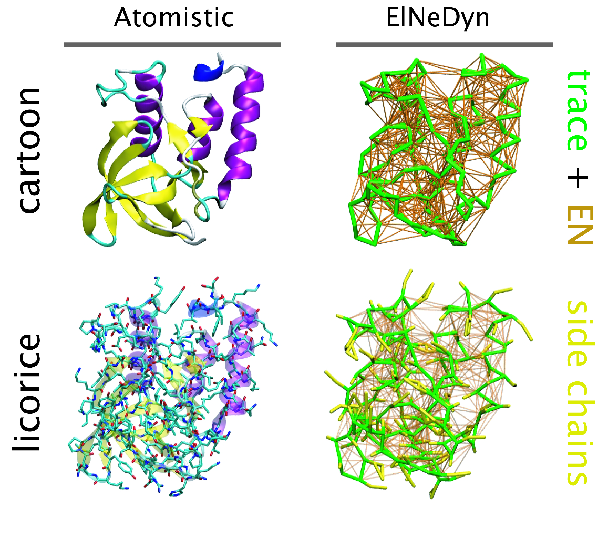
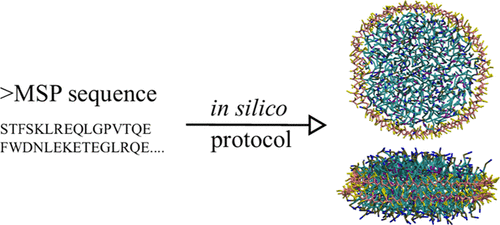
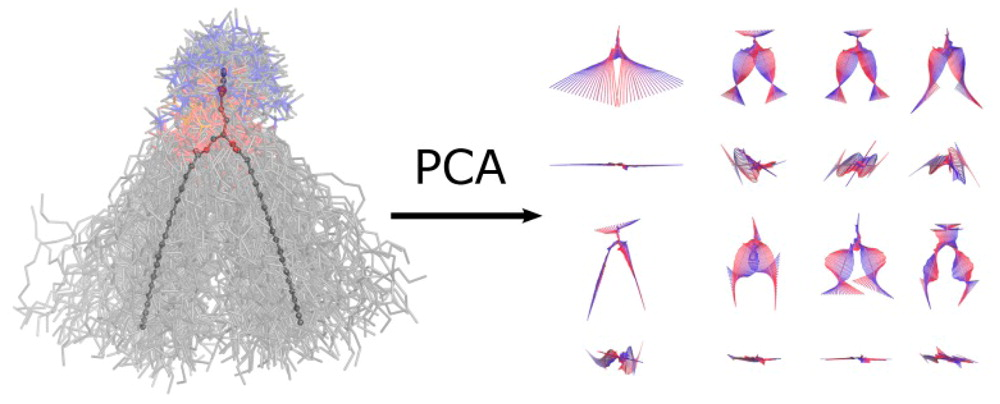

Legacy Tools
Rendering CG bonds & constraints with VMD
cg_bonds-v5.tcl is a Tcl script to read and draw Martini bonds and constraints in VMD. The bonds of the elastic networks can be drawn as well. The script for use with gromacs 5 can be found [here].
Usage
The script is invoked from the VMD command line. After sourcing it (source /path/to/cg_bonds.tcl, or /path/to/cg_bonds-v5.tcl), simply type cg_bonds (options and default values listed below). You can summon an “how to” at any moment by calling the cg_bonds_usage command.
This script uses the gmxdump executable compiled with gromacs. By default, it looks for it in the /usr/bin directory; you can specify another path with a specific option (see below). The script can now parse .top and .itp files, via the -top option.
cg_bonds
Options and default values (slightly different from the previous version!):
| -molid | “top” |
VMD-defined ID of the molecule to process |
| -gmx | /usr/bin/gmxdump |
absolute path to gmxdump executable (for version 5, this should point to the gmx executable, default /usr/bin/gmx) |
| -tpr | topol.tpr |
absolute path to the simulation file (.tpr) |
| -top | topol.top |
absolute path to the system topology files (.top linking to .itp) |
| -topoltype | “martini” |
protein topology type: “martini”, “elastic” or “elnedyn” |
| -net | “martini” |
network to draw: “martini”, “elastic” or “both” |
| -bndrcnstr | “both” |
draw bonds AND/OR constraints “bonds”, “constraints” or “both” |
| -cutoff | 7.0 | cutoff for bonds (angstroms) |
| -color | “red” |
color (color name or VMD-defined ID) of elastic bonds |
| -mat | “Opaque” |
material for elnedyn bonds |
| -rad | 0.2 | radius of elastic bonds |
| -res | 6 | resolution of elastic bonds |
In most of the cases, if a “classical” cut-off is used for the elastic network (0.9nm), more than 12 bonds per atom are defined and VMD refuses to draw them. BUT this script replaces bonds by cylinders, and is able to draw the entire elastic network. Note that you have to modify the default cutoff value to see all the links defined by the elastic network.
Then you can remove Martini bonds with the cg_delete_martini_bonds; and the cylinders with the cg_delete_elastic_bonds. The only option for the previous three commands is the VMD-defined ID of the molecule to process (via -molid, default is “top”).
Known issues
- Bonds drawn for the elastic network don’t follow the dynamic of the protein; the 12-bonds-limitation of VMD obliges to draw them using cylinders, not regular bonds. Please drop a mail if you have a solution to fix that…
- Version of VMD should be superior to
1.8.5(excluded) to run this script properly. Tclneeds an empty line at the end of the files it reads (.topand.itp)!- On the same level,
Tclseems to understand differently the simple and double quotes… Please check that before shouting.
Example
user@machine $ vmd protein.gro
vmd > source /home/user/scripts/cg_bonds.tcl
vmd > cg_bonds -top system.top -topoltype "elastic"
vmd > cg_bonds -gmx /home/user/bin/gmx-4.5.4/bin/gmxdump -tpr dyn.tpr -net "elastic" -cutoff 12.0 -color "orange" -mat "AOChalky" -res 12 -rad 0.1 -topoltype "elastic"
vmd > cg_delete_elastic_bondsThe few lines above will:
- load the protein.gro structure,
- source the cg_bonds.tcl script,
- draw the martini bonds (using the .top file specified in the command line) extracted from a .top containingelastic network bonds,
- draw the elastic network with the options (cutoff, color, material, resolution and radius) specified by extracting the bonds from the .tpr file,
- delete the elastic network bonds previously drawn.
All these line will be applied to the molecule with the VMD-defined ID 0 (or “top”).
martinize
Martinize is a python script to generate Martini protein topology and structure files based on an atomistic structure file. It replaces the old seq2itp, atom2cg and ElNeDyn scripts. The produced topology and structure files are in a format suitable for Gromacs.
The current version has been used rather extensively, however it might still contain errors or bugs. Any feedback is more than welcome! The script is “concatenated”: all the different classes, modules and forcefields are in one file. If you want to make changes yourself or add a forcefield we have a modular version available. If you would like to use this, send us an e-mail.
The major updates are available below:
- martinize.py and python 3 version martinize.py (version 2.6, May 12 2016)
- The option for the elastic bond lower cutoff (-el) is now correctly recognized.
- Cys bonds in gro-files and pdb-files without chain identifier are now correctly identified.
- Many, many code clean-ups and restructuring.
- martinize.py (version 2.5, August 11 2015)
- Removed warnings about beta status of Martini 2.2.
- Bug fix: Fixed cases where Cys-Cys constraints were not recognized as such.
- martinize.py (version 2.4, August 18 2013)
- Inverted “define NO_RUBBER_BANDS” behavior.
- Changed protein backbone constraints to bonds.
- Changed HIS BB-SC constraint to bonds.
- Bug fix: Cys-bond length and force constant.
- Bug fix: Position restraints are correctly written out when multiple chains are merged.
- martinize.py (version 2.3, February 13 2013)
- Bug fix: Correctly call dssp.
- Bug fix: Correct error message when atoms are missing.
- Bug fix: Correctly merge topologies of multiple change in case of Martini 2.2P.
- martinize.py (version 2.2, November 27 2012)
- Added charged His to all forcefields and options to choose the His-charge state.
- Bug fix: correctly handle .gro files.
- Bug fix: Correctly handle .pdb files containing hydrogens.
- Bug fix: bead types correctly set in helix starting at first residue.
- Fixed small inconsistencies in elnedyn forcefields.
- Cleaned up and added help text and warning messages.
- martinize.py (version 2.0, July 25 2012)
- Major clean-up and restructuring of the code.
- Changed forcefield selection. Forcefield now available: Martini 2.1, Martini 2.1P, Martini 2.2, Martini 2.2P, Elnedyn, Elnedyn 2.2 and Elnedyn 2.2P.
- Added function to handle new polar and charged residues in Martini 2.2P.
- Several small bug fixes.
- martinize-1.2.py (version 1.2, May 22th 2012)
- Fixed bug with counter in multi chain topologies.
- Corrected wrong collagen parameters.
- Fixed bug involving BBBB dihedrals in extended regions.
- Fixed bug when giving secondary structure as string.
- A test set is now available.
- martinize-1.1.py (version 1.1)
- Fixed bug in pdb read-in.
- Clean up of code.
- martinize-1.0.py (version 1.0)
Insane
An older version, still all in one file insane.py
Read much more about insane from the insane paper: DOI: 10.1021/acs.jctc.5b00209
2015.06.25 – insane was updated adding a few features, fixing a few bug and the lipid templates now use the new lipid-naming schema, the old templates are still available with a .o after the name e.g. “DHPC.o”.
2024 – several updates have been made to insane, including python3 and Martini3 lipid support, see https://github.com/Tsjerk/Insane, and updated Martini 3 membrane tutorials DOI 10.1016/bs.mie.2024.03.010.
Simulated evaporation and scattering
[Here] is an archive containing the necessary files to run a P3HT:PCBM evaporation (solvent is chlorobenzene) and to produce simulated scattering curves as described in:
- R. Alessandri, J. J. Uusitalo, A. H. de Vries, R. W. A. Havenith, and S. J. Marrink. Bulk Heterojunction Morphologies with Atomistic Resolution from Coarse-Grain Solvent Evaporation Simulations. JACS, 2017, 139, 3697-3705. open access
Please check the README files in the respective folders for an explanation on how to submit an evaporation and how to produce the scattering curves from the morphologies.
[Here] you can find atomistic force fields.
For another example, [here] an archive containing the necessary files to run a PTEG-1:N-DMBI evaporations (the solvent is now chloroform) as described in:
- L. Qiu, J. Liu, R. Alessandri, X. Qiu, M. Koopmans, R.W.A. Havenith, S.J. Marrink, R.C. Chiechi, L.J.A. Koster, J.C. Hummelen. Enhancing doping efficiency by improving host-dopant miscibility for fullerene-based n-type thermoelectrics. Journal of Material Chemistry A, 5:21234-2124, 2017. online
Please check the README file. Atomistic force fields are available from both the Supporting Information and on figshare.
For further questions, please contact Riccardo Alessandri: r.alessandri@rug.nl
Improved angle potentials
The restricted bending potential is now available in standard GROMACS. It is angle type number 10, see also the manual. This makes the special code referred to below unnecessary. The description of the potential is still valid.
Here you find a customized version of Gromacs with our improved angle potentials for CG simulations, together with example input files: TORSION-WEB.zip
Please consult the readme-file for a detailed explanation on using these potentials, and the following manuscript in which the methods have been introduced:
- M. Bulacu, N. Goga, W. Zhao, G. Rossi, L. Monticelli, X. Periole, D.P. Tieleman, S.J. Marrink. Improved angle potentials for coarse-grained molecular dynamics simulations. JCTC, in press, 2013. DOI:10.1021/ct400219n. abstract
For further questions, please contace Monica Bulacu: m.i.bulacu@gmail.com
do-order
A python script that calculates the order parameter for Martini lipids using version 5 and higher; after 5, gromacs continues with version 2016. Please note that this script has not been tested on many different simulations and might need manual editing.
A python script that calculates the order parameter for Martini lipids. Please note that this script has not been tested on many different simulations and might need manual editing.
Martini lipid .itp generator
A python script to help creates customized Martini lipid topologies based on the Martini 2.0 building blocks and rules. Warning, it is very easy to create unrealistic topologies so only use if you know what you are doing and with careful testing.
Cross sectional area calculation
Usage
We propose here a gromacs tool that can be used to calculate the cross sectional area of membrane protein (or similar inclusion) in membrane. Schematically illustrated in the next figure:

For more details, see paper (please cite it if you use this code):
Compile it as any tool done with gromacs template. Then just run it normally:
g_density3Darea -f traj.trr -s topol.tpr
Two groups are required in this calculation (2 is the answer to the “How many groups?” question): the first one involves all non-protein beads, the second the protein beads. With -sl you can change the 3D density grid size. You need to have the electrons.dat in your directory even thought it is not used (this is stupid and should be fixed!).
The area profile is obtained in area.xvg (three columns have the same number for historical reasons, this should be fixed as well). It can be visualized in 3D by opening the proteinformDENS.dat with rasmol, choosing Colors > Temperature and Slab mode.
If you want to calculate the mechanical energy change of a bilayer due to the inclusion, as done in the publication, you need to calculate the pressure profile outside inclusion. This can be done by using script similar to this:
paste proteinformDENS.dat 3Dpp.dat | awk '{if($10>0){pp[$13]+= $14+$18)/2;
sum[$13]++;}}END{for(i=0;i0){print i" "pp[i]/sum[i]} else{print i" 0"}}}' > test.datThe line above calculates the average lateral pressure profile outside the protein (this idea should be described in the publication).
proteinformDENS.dat and 3Dpp.dat (3D pressure field, ascii format) should be the output from g_density3Darea. Grid spacing must be exactly the same.
For more information contact Samuli Ollila (oollila@cc.hut.fi).
Remark
The code DOES NOT remove rotation or translation and the protein should be whole inside the box in all frames. This can be done by the following way (to be adapted to each system of course):
trjconv -pbc nojump
trjconv -fit transxy
trjconv -pbc mol
trjconv -fit rotxy+transxyMorphological Image Analysis
Morphological Image Analysis Tool
When analyzing computer simulations of mixtures of lipids and water, the questions to be answered are often of a morphological nature. They can deal with global properties, like the kind of phase that is adopted or the presence or absence of certain key features like a pore or stalk, or with local properties, like the local curvature present at a particular part of the lipid/water interface. While in principle all of the information relating to the global and local morphological properties of a system can be obtained from the set of atomic coordinates generated by a computer simulation, the extraction of this information is a tedious task that usually involves using a visualization program and performing the analysis by eye. Here we present a tool that employs the technique of morphological image analysis (MIA) to automatically extract the global morphology—as given by Minkowski functionals—from a set of atomic coordinates, and creates an image of the system onto which the local curvatures are mapped as a color code. The implementation is intended for the analysis of mixtures of lipids and water obtained from molecular dynamics simulations, but is also in principle applicable to all kinds of coordinates that describe binary mixtures, and is independent of the model and the method used to generate the coordinates.

Details of the method are published in:
- M. Fuhrmans, S.J. Marrink, A tool for the morphological analysis of mixtures of lipids and water in computer simulations, J. Mol. Mod. 17:1755-1766, 2011. open access
The required c programs can be downloaded here: MIA-source
A description how to use the package: MIA.pdf
For questions please contact Marc Fuhrmans (m.fuhrmans@gmail.com)
3D pressure field
A customised version of Gromacs for the calculation of local pressure fields is available here. It is not meant for actual simulation, but rather for post-simulation trajectory analysis using the -rerun option of mdrun. Currently, it is not parallelised so you have to run it on only one CPU.
If you use the code, please cite:
- Ollila et al. (2009) 3D Pressure Field in Lipid Membranes and Membrane-Protein Complexes. Phys. Rev. Lett. 102: 078101 [DOI: 10.1103/PhysRevLett.102.078101]
Here are some useful tools for the analysis of the resulting local pressure field grid:
If you have further question, you can contact either Samuli Ollila (oollila@cc.hut.fi) or Martti Louhivuori.
Mean-field boundaries
Implicit, mean-field force approximation (MFFA) boundary potentials offer a computationally efficient method to simulate e.g. large vesicular systems in spherical liquid droplets. For further information about the method see
- Risselada et al. (2008) Application of mean field boundary potentials in simulations of lipid vesicles. J Phys Chem B 112:7438-7447
In order to use the method you need Gromacs/MFFA, which is a custom version of Gromacs that supports MFFA potentials. Simple instructions and an example system also available.
ElNeDyn
ElNeDyn stands for Elastic Network in Dynamics. In this approach an elastic network (EN; a set of springs or harmonic bonds between interacting sites) is used as a structural scaffold to describe and control the overall shape of a molecule. The EN is then combined with a coarse-grained molecular force field to describe the intra- and inter-molecular interactions.

The current version of ElNeDyn focusses on modeling proteins and has been developed in conjunction with the Martini CG force field (2.0, 2.1) but can in principle be mixed with any CG model for any type of molecule. The Martini FF presents the great advantage to include a large body of biomolecules and solvents making simulations of biomolecular systems actually possible.
The rationale for the use of EN is to control the conformation of the protein while keeping its internal dynamics. This has been possible by parametrizing the EN against atomistic model simulations. By tuning the force constant of the springs and the extend of the network, backbone deformations, fluctuations and large amplitude domain motions observed in atomistic simulations of proteins have been matched. For more detail refer to X. Periole et al. 2009 JCTC 5:2531-43.
One notable detail is that the description of the bonded terms defined in original Martini for proteins has been slightly modified to accommodate for the placement of the backbone bead on the Calpha instead on the center-of-mass of the backbone atoms. The non-bonded terms were used as in the original force field.
In the following you’ll find a tar.gz file containing the scripts and programs (listed below) that will allow you to build the topology of protein from a pdb file.
Download: ElNeDyn-2.1.tar.gz
Files and short description: - AA.dat : contains the definition of the amino acids. - cg-2.1.dat : contains the definition of the bonded terms. - cg-2.1.dat.comments : description of the content of cg-2.1.dat. - pdb2CGpdb-2.1.f : fortran code reading a pdb file of a protein and giving a CG version of it. - topol-CG-2.1.f : fortran code reading the CG coordinates and building the ElNeDyn topology. - HowTo-ElNeDyn.pdf : a step-by-step description of the procedure to get from the pdb file to an MD run. - a set of mdp files to minimize, relax and simulate your ElNeDyn model.
For more information contact Xavier Periole (x.periole@rug.nl).
The development of ElNeDyn is done in close collaboration with Prof. M. A. Ceruso at the CCNY-CUNY in New York City, USA.
seq2itp
A perl script to build your own peptide/protein topology (.itp). Use the -h option to see what it can do. As input it requires the amino acid sequence (.seq) and the secondary structure information (.ssd).
- seq2itp.pl (version 1.1.5)
- martini_v2.1_example.seq
- martini_v2.1_example.ssd
molmaker.py: Create molecule coordinates from their .itps
This tool creates a .gro from an .itp file. It works by randomly scattering coordinates along a linear stretch and then performing an evil minimization as VdW and charges are faded in (using the free energy code). As you already guess, it’s totally useless for proteins unless you want a linear segment (in which case it works pretty well!).
Additionally, molmaker.py will likely not preserve your chiral centers unless you protect them in your topology using some sort of dihedral potential/restraint. Alternatively you might want to hand-correct each center using other tools and then energy-minimizing.
Check the -h flag for more details. Please report bugs in the GitHub project.
Nanodisc builder
Nanodisc technology is increasingly being applied for structural and biophysical studies of membrane proteins. Here you can find a general protocol for constructing nanodiscs for molecular dynamics simulations. The protocol is written in python and based on geometric equations, making it fast and easy to modify, enabling automation and customization of nanodiscs in silico. The tool allows one to efficiently construct any membrane scaffold protein (MSP) variant given only an input sequence.

The tool, developed by Lisbeth Kjølbye in the group of Birgit Schiøtt, can be found here: https://github.com/LHRK/Nanodisc-Builder
A paper describing the tool and showing examples of its validation is published in JCIM: https://pubs.acs.org/doi/10.1021/acs.jcim.1c00157
Convert Martini water to polarizable water
Script to convert the water in CG Martini system to polarizable water. For an example how to use this script, click here.
Resolution transformation
Custom version of Gromacs to reintroduce atomistic details to CG structures gmx_rev.tar.gz.
If you use the code, please cite:
We recommend you use Backward instead of this tool. For details about this tool please contact Andrzej Rzepiela (Andrzej.Rzepiela@physik.uni-freiburg.de)
You may also try an automized resolution transformation provided by Angel Pineiro, see http://smmb.usc.es/sugarpie/sugarpie.php.
atom2cg
A simple awk script that converts an atomistic PDB file to a coarse grained PDB file.
PCALipids Tool
Principal components analysis is a standard approach to study conformational changes in biological molecules, in particular when the free energy lanscape has only one global minima. PCAlipids is a Python-based software that performs complete quantitative analysis of conformations and dynamics of lipids or other small molecules. The information about the approach can be found in the following papers:
- Principal Component Analysis of Lipid Molecule Conformational Changes in Molecular Dynamics Simulations, Buslaev et al., JCTC 2016
- Effects of Coarse Graining and Saturation of Hydrocarbon Chains on Structure and Dynamics of Simulated Lipid Molecules, Buslaev & Gushchin, Sci. Rep. 2017
PCALipids can be downloaded here: https://github.com/membrane-systems/PCAlipids
A brief tutorial: https://github.com/membrane-systems/PCAlipids/blob/master/tutorial/tutorial.md

For questions please contact Khalid Mustafin (khalid.mustafin@phystech.edu), Pavel Buslaev (pbuslaev@phystech.edu) or Ivan Gushchin (ivan.gushchin@phystech.edu).
Leaflet identification and analysis
Wlison et al. introduce a collection of membrane analysis tools suitable for Martini, built upon the MDAnalysis package. The first and most fundamental is a method for identifying leaflets in a membrane based on spectral clustering (LeafletFinder). Once leaflets are identified, there are several leaflet-based analysis classes: the LipidEnrichment class for calculating the depletion-enrichment index of lipid groups, LipidFlipFlop class for calculating flip-flop, and the AreaPerLipid class for lateral area per lipid. For more information please visit https://github.com/OMaraLab/SLC6_lipid_fingerprints.
See also the associated paper: https://www.sciencedirect.com/science/article/pii/S2667160321000090
Rendering CG helices & sheets with VMD
We gathered and extended the set of small Tcl scripts available in our group to draw protein secondary structure in VMD-like fashion.
The script can be found here: cg_secondary_structure.tcl
Usage
After sourcing the script in VMD (source /path/to/cg_secondary_structure.tcl), two routines are available from the command line: cg_helix and cg_sheet. The options and default values are listed below. You can summon an “how to” at any moment by calling the cg_secondary_structure_usage command.
This script needs the La package, a linear algebra package written by Hume Integration Software, used here to compute principal axes of helices/sheets; the package is freely available at http://www.hume.com/la/. After downloading it, extract and source the la.tcl file in VMD.
You can give an output of do_dssp as an input for this script; it will be parsed and this script will try to draw each helix/sheet. If you use this option (-ssdump), you can leave the first list empty (see examples).
cg_helix
Usage:
vmd > cg_helix {{start1 end1} {start2 end2} ...} [OPTIONS]Where start and end are respectively the first and last residues composing an helix; you can provide more than one helix, as shown in the command line. The “{” and “}” characters are mandatory for Tcl to understand it as a list!
Options and default values:
| -molid | “top” |
VMD-defined ID of the molecule to process |
| -ssdump | “ssdump.dat” |
read topology from a do_dssp-formated file |
| -bbbname | “B.*” |
backbone bead name |
| -hlxmethod | “idealhelix” |
method to draw sheets “idealhelix”, “realhelix” or “cylinder” |
| -hlxcolor | “red” |
color of helices |
| -hlxmat | “Opaque” |
material |
| -hlxres | 12 | resolution |
| -hlxrad | 2.0 | radius of cylinders |
| -hlxsides | “round” |
arrow sides “round” or “sharp” |
| -hlxfilled | “yes” |
cylinders filled or not “yes” or “no” |
| -hlxstep | 1.0 | angle step size |
| -hlxthick | 0.2 | thickness of helix |
| -hlxwidth | 2.0 | width of helix |
| -hlxdirect | “no” |
draw the director vector of the helix (or not) |
| -hlxdirrad | 0.1 | radius of the cylinder (director) |
| -hlxdirclen | 0.3 | length of the cone (showing direction of the director) |
| -hlxdircrad | 0.2 | cone radius |
| -hlxsecbprop | 0.5 | proportion of the preceding/following bond used as length for starting/ending flat cones |
Example:
vmd > cg_helix {{5 48} {120 146}} -hlxmethod "cylinder" -hlxcolor "lime" -hlxrad 2.5cg_helix
Usage:
vmd > cg_sheet {{start1 end1} {start2 end2} ...} [OPTIONS]Where start and end are respectively the first and last residues composing a sheet; you can provide more than one sheet, as shown in the command line. The “{” and “}” characters are mandatory for Tcl to understand it as a list!
Options and default values:
| -molid | “top” |
VMD-defined ID of the molecule to process |
| -ssdump | “ssdump.dat” |
read topology from a do_dssp-formated file |
| -bbbname | “B.*” |
backbone bead name |
| -shtmethod | “flatarrow” |
method to draw sheets “cylindarrow”, “flatarrow”, “bendedarrow” or “triangle” |
| -shtcolor | “green” |
color of sheets |
| -shtmat | “Opaque” |
material |
| -shtres | 12 | resolution |
| -shtsides | “round” |
sheet sides “round” or “sharp” |
| -shtrad | 0.4 | radius of cylinders |
| -shtconrad | 0.8 | radius of arrow cones |
| -shtlencone | 1.5 | length of arrow cones |
| -shtfilled | “yes” |
cylinder filled or not “yes” or “no” |
| -shtarrwidth | 2.0 | width of arrows |
| -shtheadsize | 4.0 | size of the arrow heads |
| -shtarrthick | 1.0 | thickness of arrows |
| -shtstep | 0.1 | distance step size |
| -shtthick | 0.2 | thickness of sheet |
| -shtwidth | 2.0 | width of sheet |
| -shtdirect | “no” |
draw the director vector of the sheet (or not) |
| -shtdirrad | 0.1 | radius of the cylinder (director) |
| -shtdirclen | 0.3 | length of the cone (showing direction of the director) |
| -shtdircrad | 0.2 | cone radius |
| -shtsecbprop | 0.5 | proportion of the preceding/following bond used as length for starting/ending flat cones |
Example:
vmd > cg_sheet {} -shtfilled "no" -ssdump protein.dat -shtarrowthick 0.4Known issues
There is still a bunch of small graphical issues (thanks to drop a mail to the contact at the bottom of this page whenever you find something… unexpected); sheets are particularly ugly. It’s not the priority right now, it will be fixed when we will have time… keep checking this page and your version of the script updated! We are writing this tool for personal purpose, and we didn’t retroactively test all the graphical options and the result when mixing them together. Thanks to do that for us!
- Drawings do not follow the protein dyamic along a trajectory; you need to redraw everything at each step (no ways to change this behavior so far).
- The “
bendedarrow” (sheet style), which would be the closest toVMDatomistic drawings, doesn’t work so well so far. Still working on it! - If an helix is too bended,
VMDwill not be able to draw it using the “idealhelix” or “realhelix” method (the script will output an error message with the termini of the helix). Not able to draw helices smaller than 3 residues (!).Fixed. Avoided.Tclneeds an empty line at the end of the files it reads!- On the same level,
Tclseems to understand differently simple and double quotes… Please check that before shouting.
For feedback or problems contact c.arnarez@rug.nl or post to the platform.
DAFT - Docking Assay For Transmembrane Components
DAFT is a method for investigating protein-protein and protein-lipid interactions by running many association simulations. These allow identifying the binding hotspots and alternative binding sites.
DAFT is a bundle of programs and supporting files, and comprises martinize, martinate, insane, and several MARTINI interaction table generating Python scripts, toghether with the standard lipid, ion and solvent topologies. The user interface is formed by the bash script daft.sh (see daft.sh -h for more information).
More background on this DAFT approach can be read in the DAFT paper: DOI: 10.1021/ct5010092
Flux calculator
This tool calculates fluxes across either a whole bilayer or through a defined channel. The trajectory must have been treated with -pbc nojump and, if analyzing the flux through a channel, care must be taken to ensure the channel is kept whole in the trajectory (use -pbc cluster).
Please cite J. Am. Chem. Soc., 2017, 139 (7), pp 2664–2671 whenever using results generated by fluxer.py.
Check the script’s project page for more information on usage and to submit bugs.
Analyze lipid fingerprints
The following script, based on work of Corradi et al. [1], is provided for all your lipid fingerprint analysis needs. Special thanks to Amanda Buyan and Helgi Ingólfsson!
Download the script here. Please note that Python 2.7 (or equivalent) is required. For help on how to use it, simply type “python lipid-PM-counter-fix-v3.0.py -h”
[1] V. Corradi, E. Mendez-Villuendas, H.I. Ingólfsson, R.X. Gu, I. Siuda, M.N. Melo, A. Moussatova, L.J. DeGagné, B.I. Sejdiu, G. Singh, T.A. Wassenaar, K. Delgado Magnero, S.J. Marrink, D.P. Tieleman. Lipid–Protein Interactions Are Unique Fingerprints for Membrane Proteins. ACS Central Science 4:709–717, 2018